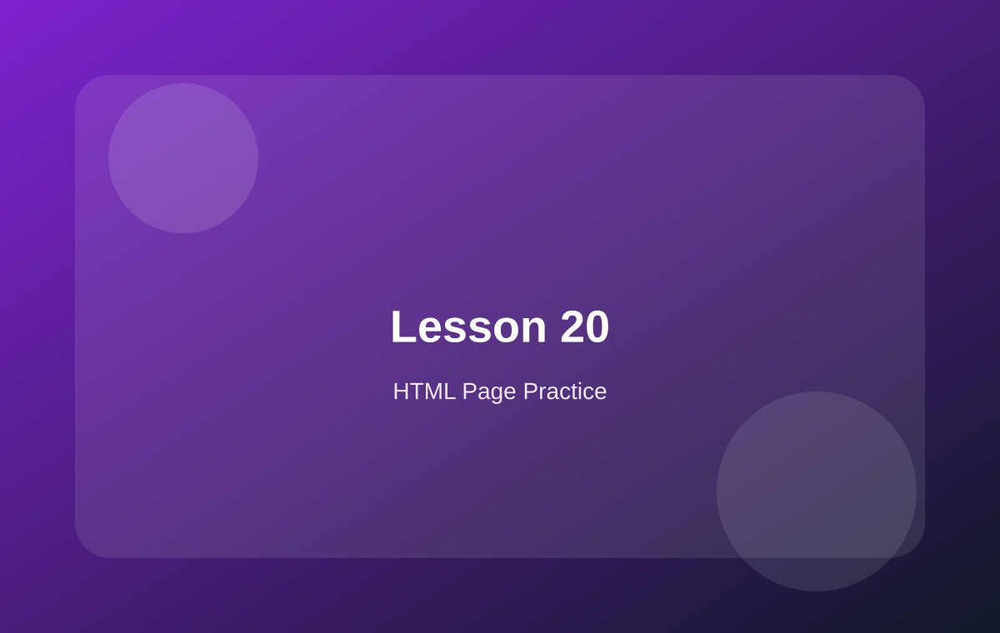

WooCommerce HTML Page Learning Kit
从静态 HTML 页面开始，逐步学习 WooCommerce 页面结构、产品卡片、产品列表、分类筛选、产品详情、购物车和结账页面。

学习说明
这版不重点讲 PHP、hooks 和复杂二次开发，而是回到页面本身：先学会如何用 HTML + CSS 做出 WooCommerce 常见页面。
学完后，你会更容易理解 WooCommerce 的产品列表模板、产品详情模板、购物车模板和结账模板。
页面结构产品卡片产品列表分类筛选产品详情购物车结账页